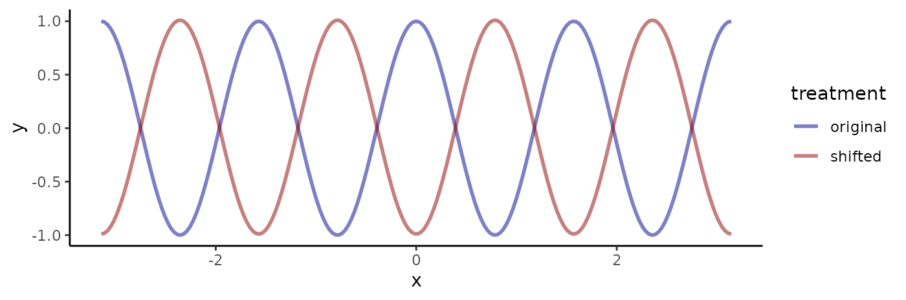

Unlike R’s native fft function, fftab
outputs both the fourier coefficients and their associated frequencies
in tabular form. This makes it easy to manipulate these data using pipes
and functions from the tidyverse.
We start by loading the package and setting the random seed for reproducibility.
Currently, the fftab function supports numeric and
complex vectors, time series objects, and multidimensional arrays.
Vector input
The simplest case is the fft of a numeric vector.
v <- rnorm(8)
v_fft <- fftab(v)
print(v_fft)
#> # A tibble: 8 × 2
#> .dim_1 fx
#> * <dbl> <cpl>
#> 1 0 -2.377+0.000i
#> 2 0.125 -0.526-0.225i
#> 3 0.25 -1.288-3.676i
#> 4 0.375 -2.747+3.093i
#> 5 0.5 1.841+0.000i
#> 6 -0.375 -2.747-3.093i
#> 7 -0.25 -1.288+3.676i
#> 8 -0.125 -0.526+0.225iThe output table has two columns. The .dim_1 column
contains the normalized frequencies in cycles per unit distance along
the sequence, i.e., a length 8 vector is 8 units long. For an
even-length vector, the largest frequency will be the nyquist frequency
0.5 as shown here. Many treatments use un-normalized frequencies when
not dealing with explicit dimensions, so be aware of the difference. The
maximum un-normalized frequency in the case above would equal four
cycles per the length of the vector. Notice that following convention,
the frequencies wrap at zero producing negative frequencies.
The fx column contains the associated fourier
coefficients in complex form. Because it is often easier to manipulate
real numbers, functions are provided to change the representation
between complex (cplx), rectangular (rect),
and polar (polr).
v_fft |> to_rect() |> print(n = 3)
#> # A tibble: 8 × 3
#> .dim_1 re im
#> <dbl> <dbl> <dbl>
#> 1 0 -2.38 0
#> 2 0.125 -0.526 -0.225
#> 3 0.25 -1.29 -3.68
#> # ℹ 5 more rows
v_fft |> to_polr() |> print(n = 3)
#> # A tibble: 8 × 3
#> .dim_1 mod arg
#> <dbl> <dbl> <dbl>
#> 1 0 2.38 3.14
#> 2 0.125 0.572 -2.74
#> 3 0.25 3.89 -1.91
#> # ℹ 5 more rows
v_fft |> set_repr(c("polr", "rect", "cplx")) |> print(n = 3)
#> # A tibble: 8 × 6
#> .dim_1 mod arg re im fx
#> <dbl> <dbl> <dbl> <dbl> <dbl> <cpl>
#> 1 0 2.38 3.14 -2.38 2.91e-16 -2.377+2.91e-16i
#> 2 0.125 0.572 -2.74 -0.526 -2.25e- 1 -0.526-2.25e-01i
#> 3 0.25 3.89 -1.91 -1.29 -3.68e+ 0 -1.288-3.68e+00i
#> # ℹ 5 more rowsThe columns re, im, mod, and
arg, are produced by applying the R functions
Re, Im, Mod, and Arg
to the complex coefficients. There are a set of matching
get_* functions that retrieve different parts as vectors or
matrices.
v_fft |> get_arg()
#> [1] 3.14 -2.74 -1.91 2.30 0.00 -2.30 1.91 2.74These functions will work correctly with any representation and are
used internally so that all fftab package functions produce
the same output given any input representation. You do not need, for
example, to convert from the polar to rectangular representation to
retrieve the imaginary part of the coefficients using
get_im.
Time series input
Time series in R have implicit units defined by their beginning and
ending times. In addition, time series carry a frequency attribute which
describes the number of samples per time unit. For example, the
sunspot.month data starts in 1749 and ends in 2014
(implicit units of years) and has a sampling frequency of 12, meaning
monthly counts. When computing fourier frequencies, fftab
uses this information to output frequencies in cycles per implicit time
units.
sunspot.month |> fftab() |> print(n = 5)
#> # A tibble: 3,177 × 2
#> .dim_1 fx
#> * <dbl> <cpl>
#> 1 0 165092+ 0i
#> 2 0.00378 13876+15850i
#> 3 0.00755 -2734+16132i
#> 4 0.0113 -8428-18111i
#> 5 0.0151 -14755- 1861i
#> # ℹ 3,172 more rowsHere, .dim_1 contains frequencies in cycles per year
rather than cycles per sample interval (months) because the data set has
implicit time units of years. Note that fftab will restore
the original data correctly when inverting the transform.
Array-valued input
Arrays retain their dimensions.
ra <- matrix(rnorm(9), 3)
ra |> fftab() |> to_polr()
#> # A tibble: 9 × 4
#> .dim_1 .dim_2 mod arg
#> <dbl> <dbl> <dbl> <dbl>
#> 1 0 0 3.30 3.14
#> 2 0.333 0 1.05 0.780
#> 3 -0.333 0 1.05 -0.780
#> 4 0 0.333 2.17 2.18
#> 5 0.333 0.333 1.97 1.19
#> 6 -0.333 0.333 1.87 2.22
#> 7 0 -0.333 2.17 -2.18
#> 8 0.333 -0.333 1.87 -2.22
#> 9 -0.333 -0.333 1.97 -1.19And real-valued inputs generates real-valued output.
ra |> fftab() |> ifftab()
#> [,1] [,2] [,3]
#> [1,] -0.564 -0.9984 0.959
#> [2,] -0.890 -0.7763 -0.110
#> [3,] -0.477 0.0645 -0.511Tracking real-valued input is important in certain operations where maintaining conjugate symmetry is important.
Complex input
The fftab object tracks whether input is real or complex
and acts accordingly when passed to the ifftab
function.
Example 1: applying a phase shift
The polar representation is useful if we want to manipulate the phase information contained in a signal. First, we generate a sinusoid.
s1 <- seq(-pi, pi, length.out = 200) |>
tibble::as_tibble() |>
dplyr::mutate(x = value, y = cos(4 * value), treatment = "original", .keep = "none")Let’s examine the results.
ggplot(s1) +
geom_line(aes(x = x, y = y)) +
theme_classic()
Now we apply the fft and make a basic plot. The provided
plot function is only for a quick look. Use
ggplot directly for full control.
To shift the signal, we need to add a factor to the phase
(arg). Because this example has real-valued input, we have
to respect conjugate symmetry.
s2_fft <- s1_fft |>
dplyr::mutate(arg = dplyr::case_when(
.dim_1 == 0 ~ arg, # DC component
.dim_1 == 0.5 ~ arg, # nyquist frequency
.dim_1 > 0 ~ arg - pi, # Positive frequencies
.dim_1 < 0 ~ arg + pi # Conjugate negative frequencies
))Now we can reconstruct the shifted signal and compare it to the original.
s1 |>
dplyr::mutate(y = s2_fft |> ifftab(), treatment = "shifted") |>
dplyr::bind_rows(s1) |>
dplyr::mutate(treatment = as.factor(treatment)) |>
ggplot() +
geom_line(aes(x = x, y = y, color = treatment), lwd = 1, alpha = 0.5) +
scale_color_manual(values = c("darkblue", "darkred")) +
theme_classic()
Example 2: time series filtering
To demonstrate how fftab facilitates ad hoc
spectral analysis, I show how one can denoise a time series with
dplyr. First, let’s make a plot of the
sunspot.month data and save it for later output.
ggplot(fortify(sunspot.month)) +
geom_line(aes(x = Index, y = Data)) +
ylab("Sunspot count") +
xlab("Year") +
theme_bw() ->
p1Now I generate a smoothed version by zeroing out the highest
frequency components. Because .dim_1 is in cycles per year,
a cutoff of 1/5 suppresses variation below the 5-year scale.
sunspot.month |>
fftab() |>
to_polr() |>
dplyr::mutate(mod = ifelse(abs(.dim_1) > 0.2, 0, mod)) |>
ifftab() |>
fortify() |>
ggplot() +
geom_line(aes(x = Index, y = Data)) +
ylab("Sunspot count") +
xlab("Year") +
theme_bw() ->
p2Now we can examine the results.
p1 / p2Example 3: 2D gaussian autocorrelation
A convenient feature of fftab is that it works with
array inputs of arbitrary dimensions. The function
get_l2sq() returns the squared L2 norm of the fourier
frequencies in any dimensions. This is useful for filtering
multi-dimensional data.
We can use this to, for example, produce gaussian autocorrelated maps. A gaussian kernel in the frequency domain will have So we can apply a convolution by scaling the coefficients by this factor.
sigma <- 64
scale_fac <- -pi^2 * sigma^2
matrix(rnorm(512 * 512), 512) |>
fftab() |>
to_polr() |>
add_l2sq() |>
dplyr::mutate(mod = mod * exp(scale_fac * l2sq)) |>
ifftab() ->
gauss_acfAfter inverting, the white-noise input should have a gaussian autocorrelation with scale 64 steps. Let’s plot the result.
tidyr::expand_grid(x = 1:512, y = 1:512) |>
tibble::add_column(z = gauss_acf |> as.vector() |> scale()) |>
ggplot() +
aes(x = x, y = y, z = z) +
geom_contour_filled(bins = 16) +
geom_contour(bins = 16, color = "darkgrey") +
scale_fill_viridis_d() +
coord_equal() +
theme_void()